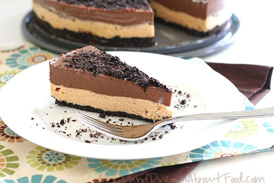

Paragraph
Potential Allergens:
A remake of the summer classic, this low carb dirt cake recipe will blow your mind! Crumbly chocolate cookie crust with layers of creamy peanut butter filling and chocolate pudding. Gluten-free and grain-free.
Potential Allergens: